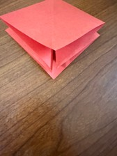
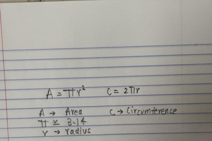
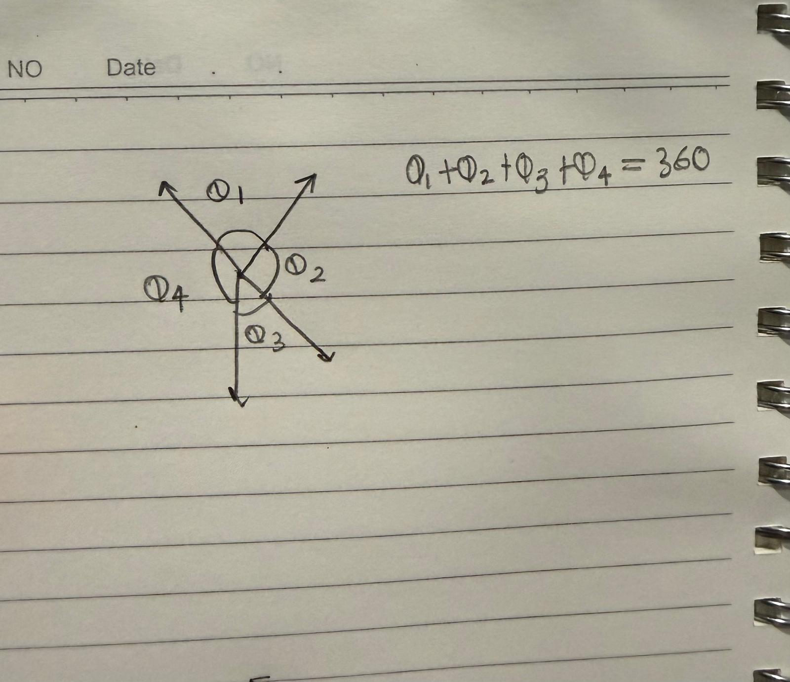
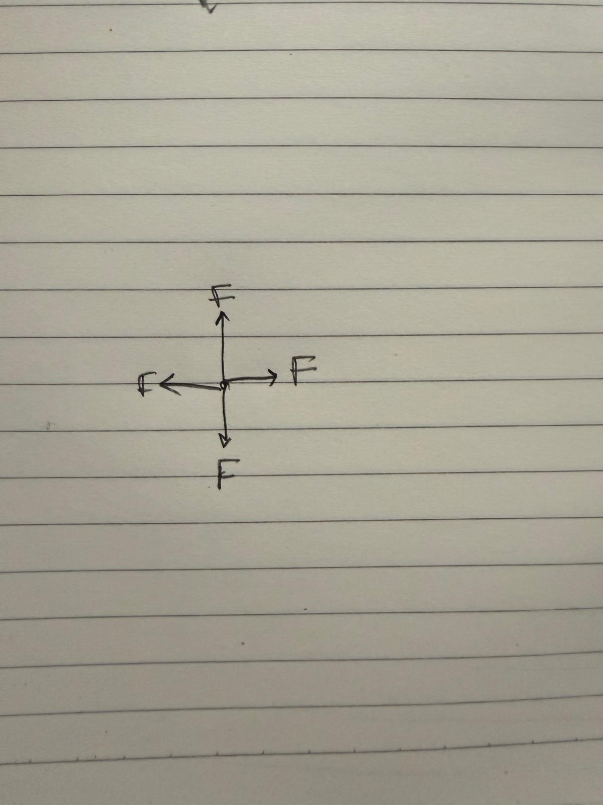

The waterbomb base is usually introduced as one of the first foundations in origami.
At first glance, it seems simple: a square sheet collapses inward through a system
of diagonal and horizontal folds to create a compact triangular structure.
Yet beneath that simplicity lies a mathematical and engineering principle that has
directly influenced one of the most important medical technologies in modern healthcare:
the expandable heart stent.
The same folding logic that allows a waterbomb base to collapse and reopen smoothly
has helped engineers design devices capable of saving human lives inside blocked arteries.
Origami has become increasingly important in scientific and medical research because
folding patterns solve problems involving movement, flexibility, and compact storage.
A heart stent is a tiny tube inserted into narrowed or blocked arteries to restore
blood flow. Doctors must insert the stent into the body through extremely small
blood vessels, which means the device must begin in a compressed form.
Once it reaches the blocked artery, it needs to expand safely and evenly without
damaging surrounding tissue. This challenge mirrors the exact behavior of the
waterbomb base. The folds allow a flat structure to compress into a narrow shape
and then reopen in a controlled and predictable way.

Waterbomb base crease pattern showing diagonal and center folds
The geometry behind the waterbomb base is what makes this possible.
The structure contains carefully arranged mountain and valley folds that
distribute force throughout the paper. When pressure is applied, the folds
collapse inward symmetrically rather than randomly crumpling.
Engineers realized that this same principle could be adapted into expandable
cylindrical structures made from metal alloys and flexible polymers.
Instead of paper, biomedical engineers use materials such as nitinol,
a metal capable of remembering its shape after compression.
Once inserted into an artery, the folded structure expands outward similarly
to how the waterbomb base unfolds when pressure is released.
As the radius increases, the artery opening becomes larger,
restoring proper blood circulation.

Radial expansion increases artery opening size
The connection between origami and medicine demonstrates how mathematics
applies far beyond classrooms. The waterbomb base depends heavily on
geometric symmetry. Each crease contributes to a balanced transformation
of the structure.
Without symmetrical folds, the base would twist unevenly and fail to collapse
correctly. In medical stents, symmetry is equally critical because uneven
expansion inside an artery could damage blood vessels or fail to restore
proper blood circulation.
The predictable motion of origami-inspired folds helps engineers create safer
devices with controlled expansion patterns. Every angle and fold must work
together so the structure remains balanced while expanding.

Symmetry axes surrounding a central point
This idea belongs to a larger field called origami engineering.
Researchers study folding structures because folds allow large surfaces
to become compact while still remaining functional.
In medicine, compactness matters enormously.
Surgeons aim to minimize invasive procedures whenever possible because
smaller incisions reduce recovery time, infection risk, and physical trauma
to patients. Origami-inspired stents support minimally invasive surgery by
allowing doctors to transport a relatively large support structure through
tiny blood vessels.
The waterbomb base is particularly valuable because of its radial expansion
properties. Radial expansion means the structure expands outward evenly in
all directions from a center point.

Balanced outward force distribution
Another reason the waterbomb base became influential is its efficiency.
A small number of folds creates a surprisingly flexible transformation.
Engineers often seek designs that achieve maximum movement using minimal
material because smaller and lighter medical devices are easier to insert
into the body.
The folding mechanism reduces the need for complicated mechanical joints or
moving parts. Instead, the geometry itself controls the movement.
This reduces manufacturing complexity and increases reliability inside
critical medical situations.
The influence of origami in medicine extends beyond heart stents.
Researchers have also explored folding principles for surgical tools,
artificial organs, drug-delivery capsules, and emergency shelters for
disaster relief. However, cardiovascular stents remain one of the clearest
and most life-saving examples.
Heart disease is one of the leading causes of death worldwide,
and stents are used in millions of procedures every year.
By helping arteries remain open, these devices restore oxygen-rich
blood flow to the heart and significantly reduce the risk of heart attacks.
What makes this connection especially fascinating is that the inspiration
came from something many children learn casually through arts and crafts.
The waterbomb base is commonly taught in beginner origami because it
demonstrates how folds interact dynamically.
Few students realize that the same structure later appears in advanced
biomedical engineering laboratories. This transformation from classroom
craft to surgical technology highlights the unexpected importance of
creativity and interdisciplinary thinking.
Art, mathematics, and medicine are often treated as completely separate
subjects, yet origami demonstrates that they can intersect in meaningful
and practical ways. A folding pattern created centuries ago for artistic
expression eventually became a source of inspiration for life-saving
medical innovation.
The waterbomb base ultimately represents more than a folding technique.
It shows how geometric thinking can solve real human problems.
Through careful study of symmetry, motion, and folding behavior,
engineers adapted an ancient paper-folding structure into technology
capable of saving lives every day.
Patients receiving heart stents may never realize that the principles behind
their treatment originated from origami, yet the connection remains powerful.
A simple folded square of paper became the foundation for innovations that
help doctors treat cardiovascular disease more safely and effectively.
The waterbomb base proves that even the simplest forms of mathematics and
design can eventually shape technologies that protect and preserve human life.